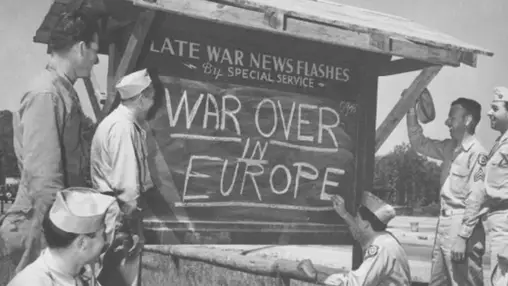

Gaining sufficient understanding of conflicts and paths to their resolution takes time and sustained effort. If you have proposals on the resolution of the ongoing Sudan and Israeli-Palestinian conflicts, write about them!

If Japan's civilization had to be described by one visualisation, the famous picture of the huge wave over Mount Fuji would probably work best. Thus, it could be argued that it has attained its unparalleled cultural refinement (which is likely our best hope for long term survival in the cosmic world) and military might (necessary to maintain our independence) through the natural facts of its existence. Japan is once again prioritising its defense.
Korea's location between China, Russia and Japan forces it to balance between greater forces. In the face of changing generational preferences North Korea is changing its peninsular policy, while South Korea is increasing its regional influence, expressing willingness to work with "not like minded" states and is proactively seeking a renewal of the international order.
The world was much easier to manage when there were two poles of influence. Modern day Commonwealth of Independent States is largely an agglomeration of neo-feudal states without a global idea. The natural "Global North/South" split will more equally take into account interests of all sovereignties, but it will take time to arrive at such a configuration.
Eurasia's history is marked by the freeing influence of the West and the willful approach of the East. It stands as the gateway between these two ways of thinking and two ways of life. The Russian Federation is the biggest and most influential state of this formation. It has a relatively low population and very vast territory. Combined with the northern climate this led to the development of wait-and-see progress bursts, aggressively defensive martial culture (with a necessity to centralize) and a mobilization economy. Being considered a Western country in the East and an Eastern country in the West, Russia offers a way of thinking that blends both perspectives.

Europe has been at near constant warfare for the entire history of its civilization right until the end of World War II. Can it stay free of deadly and maiming conflict in the face of increasing unifying (whole of) North America, economically influential China and likely soon to be "sovereign" CIS?
The reasoning for invading Iraq has wider multifaceted
regional basis and goes deeper than the misguided effort to
remove a security threat or the blatant pursuit of an
opportunistic war to solidify hegemony.
The Western Civilization starts with Greek democracy of the privileged many, moves to the republic of the powerful few and goes to the more free vassage of the chosen noble. The non-violent and universal Christianity played a critical role in moderating the feudal rights and its subsequent relaxation added a resource perspective to subsequent Western expansion.
AUKUS is a security partnership between the USA, UK and Australia. The three constituent countries of AUKUS descended from Great Britain, which developed the fastest among the Western nations. Its geography acted as both a protective barrier and as an incentive to have a more moderated, trade oriented outlook on warfare.
Goal: Understanding between sides to accomplish ASAP ceasefire
- Self Determination: Army vs RSF across Arab, Nubian, Southern, across varying size ethnic groups, across Arabic vs English language
- Security: Local - UK, Regional - USA vs PRC
- Prosperity: Nile, Gold, Oil
- Positive Long Term Outlook: LANDbridge between Ethiopia and Egypt, in Africa - Middle East macroregion
- Active External Forces: Iran, UAE, Yemen, Russian Federation, Ukraine, Ethiopia
From the early beginnings of its history China has
considered itself the middle land that exists in the midst
of relatively more barbarian surroundings. Until the Western
Imperial expansion of the 19th century terms "the Middle
Kingdom" and then the more encompassing "All under Heaven"
were common. For the bulk of the history of our
civilizations it has been the biggest economic and trade
force on the planet. In the post-Imperial age the slogan
"Striving for Unity" is helping the Chinese people look past
their differences and work towards social harmony. At the
same time this concept is used to proactively oppose the
remaining Western influence over the Chinese state and its
territories, including the controversially debated Taiwan.
Besides unity the modern day Chinese culture is very much
about prosperity. China is not interested in conquering its
surroundings and would rather enjoy economic leadership
achieved through war-preempting means.
There are 5 forces that play a decisive role in the
resolution of the Ukraine -> Sudan -> Gaza conflict chain.
They are AUKUS, Russian Federation, China, India and Japan
(in the order of relevance). The two civilizational
countries that have the most influence in resolution of the
on-going conflicts are India and China. Providing the Causes
of War of these countries pave the path towards an as soon
as possible, peaceful resolution of these conflicts, which
has to do with realizing that we are on the verge of
entering the age of
fusion energy
(using deterium from the oceans and cynthesized
or
mined
Helium-3) and robotization.
India is the oldest continuous civilization on the planet
and arguably the country best positioned to achieve
non-lethal, non-maiming warfare first.
Current wars in Sudan, Gaza and Ukraine are interlinked and resolving the most global of these conflicts will lead to stabilizing, cascading effects. Lack of immediate action to stop humanitarian crises will have negative cascading effects for the entire planet and for the main power holders in the world.
Ukraine is entering winter with Kyiv and Kharkiv now in mean average negative temperatures. If Russia chooses to accelerate its likely plans the country will be defactor in diesel generator mode placing the population at high risk. Now, before the customary Russian winter offensive is the time to act and save the Ukrainian people from cold and hunger in the best case or the being under direct fire and the beginning of the partitioning of the Ukrainian state between The East and The West in the worst. Let's get to an uneasy ceasefire in the now irreversible territorial realities before it's too late!